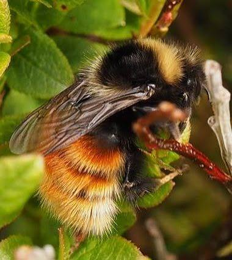
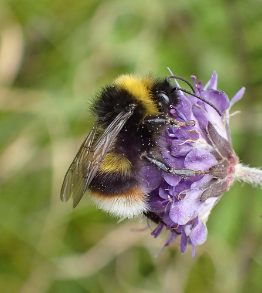
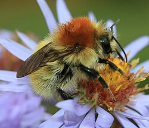

26 Introduction
26.1 Prepare a new script
As usual, you will want to start today’s practical with the following steps:
- Open a new R script.
- Save it under a sensible name (e.g. for today, something like
Week6Practical_Biodiversity). - Add in a commented header to explain what the script is.
- Add in the code to load our three main packages/libraries (
dplyr,tidyr, andggplot), as well aspatchwork, which we will also use today. - Run the code the load the libraries.
Tip! Remember, for items 3 and 4 the easiest thing is to open your script from last week, copy and paste the relevant content, and then change the information that needs to be updated (e.g. the date and the practical number/theme in the header).
26.2 The Bumblebee data
Today’s primary dataset is from GBIF, the Global Biodiversity Information Facility.
From their website:
GBIF is an international network and data infrastructure funded by the world’s governments and aimed at providing anyone, anywhere, open access to data about all types of life on Earth.
Coordinated through its Secretariat in Copenhagen, the GBIF network of participating countries and organizations, working through the participant nodes, provides data-holding institutions around the world with common standards, best practices and open-source tools enabling them to share information about where and when species have been recorded. This knowledge derives from many different kinds of sources, including everything from museum specimens collected in the 18th and 19th century to DNA barcodes and smartphone photos recorded in recent days and weeks.
The data from GBIF is occurrence data, where each observation is a sighting of an organism.
We will be focusing on three species of bumblebee that are designated as “scarce” in the UK by the Bumblebee Conservation Trust:
- Bilberry bumblebee (Bombus monticola)
- Broken-belted bumblebee (Bombus soroeensis)
- Moss carder bumblebee (Bombus muscorum)




We used the geographical coordinates associated each of the GBIF observations to obtain matching values of 2024 landcover data from UKCEH.
26.2.1 Download and upload the data
Download today’s dataset from the week 6 Moodle page: bee_data_landcover.csv
Upload the file to the R server and move it into your data folder.
26.2.2 Read in the data
Read in the data from the csv file.
If you use the code from a previous week, you will need to change two things:
- the names of the data frame you are using to store the data (I suggest something like
data_bee) - the names of the csv file.
Once you run the code, you should see the data frame in your Environment tab.
Notice how many observations (rows) and variables (columns) the dataset has.
26.2.3 Examine the data
Use one of the methods you’ve learned previously to examine the data.
Questions:
Try to answer the following questions.
- How many values of
LandCoverTypeare there? What are they? - What values can
LandCoverConfidencehave? How confident are we for most observations? - What other columns are there?